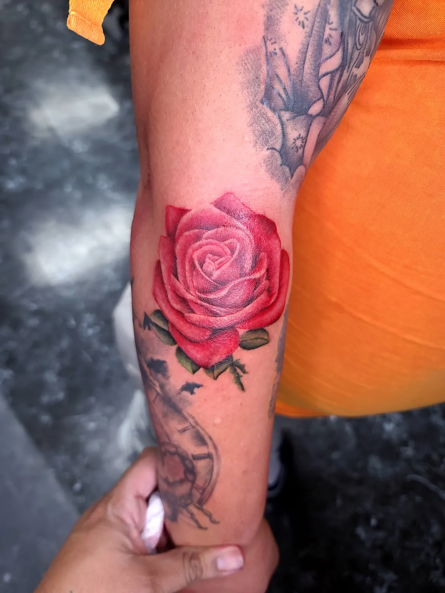

Floral & Botanical Tattoos
From one quiet stem to a full floral sleeve — matched to the flower, the placement, and you.
My floral work started at a shop that specialized in it, where I worked closely with a dedicated floral artist. What began as training became a three-year focus — long enough that floral stopped being a style I could do and became one of the three I'm known for.
I work the full floral range: delicate fine line, bold statement pieces, color realism, and black and grey realism — occasionally freehand. Most artists pick one lane; I match the treatment to the flower, the placement, and you.
Selected Floral & Botanical Tattoos





The peony thigh piece
A fine line thigh piece with peonies — one of my favorites — alongside full floral sleeves. You'll find both in the gallery above.
Designed for negative space
In fine line floral, negative space is everything. Petals need room to breathe or they blur together as skin ages. I build that space into every design — it's why my fine line work still reads clean years later.
I take everything from small pieces to full sleeves. But I'll be honest in your consult: if your fine line idea is too small, I'll push you slightly bigger. Three years of floral work taught me that too much detail in too small an area doesn't age well — and I'd rather adjust your design now than have you regret it in five years.
What a floral piece takes
Floral varies more than my other styles: I've finished fine line floral sleeves in 2 full-day sessions, while detailed or color-heavy sleeves run up to 5. Detail level and color are the main factors — you'll get a real estimate at consult. Coming from out of town? How traveling for a tattoo works.
Floral & Botanical — FAQ
Do fine line floral tattoos age well?
Mine are designed to. In fine line floral, negative space is everything — petals need room to breathe or they blur together as skin ages. I build that space into every design; it's why my fine line work still reads clean years later.
How big should a fine line tattoo be?
Big enough for the detail to hold. I take everything from small pieces to full sleeves, but if your fine line idea is too small, I'll push you slightly bigger — I'd rather adjust the design now than have you regret it in five years.
Color or black and grey for a floral tattoo?
I do both — color realism and black and grey realism, plus everything from delicate fine line to bold statement pieces. The flower, the placement and how you want it to feel decide the treatment.
How many sessions is a floral sleeve?
Floral varies more than my other styles: I've finished fine line floral sleeves in 2 full-day sessions, while detailed or color-heavy sleeves run up to 5. You'll get a real estimate at your consult.
More styles by Carlos
Ready to start your floral piece?
Free consultation, in person or remote. Based at Koi Dragon Tattoos in Murray, Utah — booking clients worldwide. Coming from out of town? How traveling for a tattoo works.